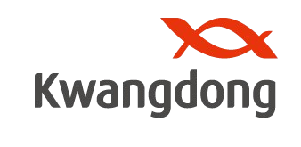

클라우드 기반 통합 업무 환경으로의 전환 가능성을 검증합니다
"AI 시대, 업무 인프라의 전환이 필요합니다"
"AI 시대의 업무 인프라를 미리 준비합니다"
"각자의 방식으로 잘 해왔지만, 다음 단계가 필요합니다"
"AI 비서·자동화가 일상이 되는 업무 인프라"
현재 업무 방식에서 개선할 수 있는 영역
※ 정확한 수치는 PoC 기간 사전 설문을 통해 확보 예정 (별첨 A 참조)
"국내외 주요 기업들이 이미 GWS로 전환했습니다"
출처: Google 하림사례 · Google Workspace Customers
"AI 시대에 맞는 업무 인프라 구축"
| 평가 기준 | Google Workspace | Microsoft 365 | 적합도 |
|---|---|---|---|
| 실시간 협업 | 클라우드 네이티브 동시편집 | 데스크톱 앱 기반, 동기화 지연 | GWS ✓ |
| AI 활용 (R&D) | Gemini · NotebookLM 연동 | Copilot (오피스 보조) | GWS ✓ |
| 현장-사무실 | 모바일 네이티브, 기기 독립적 | 앱 설치 필요, 무거움 | GWS ✓ |
| 보안/관리 | 단일 Admin Console, DLP | 복잡한 관리 구조 | GWS ✓ |
| TCO(총비용) | 설치 불필요, 통합 패키지 우위 | PC별 설치 관리 공수 | GWS ✓ |
단순 메신저가 아닌, AI·시스템 통합 인터페이스로서의 가능성 검증
Slack 채널에서 AI 에이전트가 CRM 데이터 조회·고객 응대 자동화
채널 대화 요약, 문서 초안 생성, 리서치를 Slack 안에서 즉시 수행
장문 분석, 코드 리뷰, 보고서 검토를 팀 채널에서 바로 요청
"전사 도입 전에, 제한된 범위에서 먼저 증명합니다"
| 기간 | 준비: 3.23~31 / PoC: 4.1 ~ 5.27 8주 |
| 대상 부서 | CMO본부 (95명) + 기획관리본부 (60명) |
| 총 참여 인원 | 155명 |
| 라이선스 | GWS Enterprise Standard + Slack Business+ |
| PoC 비용 | GWS 무상(트라이얼) + Slack 약 560만원 (155명 × 2개월) |
각 부서의 실제 업무를 새로운 도구로 수행하고, AS-IS 대비 변화를 측정합니다
| 부서 | 검증 시나리오 | 현재 방식 (AS-IS) | PoC 방식 (TO-BE) |
|---|---|---|---|
| 전략기획 | 경영보고서 공동 작성 | 각 부서 PPT 메일 회신 → 수작업 합본 | Slides 공동편집, 합본 작업 제거 |
| 영업지원 | 견적서·계약서 검토 | 메일 첨부 핑퐁, 최종본 혼선 | Docs 제안 모드, 버전 자동 관리 |
| 총무/디자인 | 규정 관리 · 시안 버전 관리 | 메일 배포, 구버전 혼재 | Docs 단일본 + Drive 버전 자동 추적 |
| F&B영업 | 미팅 기록 + 프로모션 | 개인 노트, 정보 분리 | 모바일 Docs + 통합 캘린더 |
| 브랜드/CMO | 캠페인 기획 + 주간 보고 | 순차 메일, 수작업 취합 | 프로젝트 채널 + Slides 동시 편집 |
부서 내 개선뿐 아니라, 본부 간 협업이 얼마나 빨라지는지를 핵심적으로 검증합니다
전략기획 + CMO전략 + 각 본부
Slides 공동편집으로 수작업 합본 제거, 리마인더로 마감 관리
검증: 보고서 취합 시간, 마감 준수율
브랜드전략 + 디자인 + 영업 + CMO전략
요청 양식 통일 → Drive 단일 버전 관리 → 스레드 피드백
검증: 파일 버전 오류 건수, 시안 피드백 리드타임
F&B영업 + 영업지원 + 전략기획
Docs 제안 모드로 검토~확정, 버전 혼선 원천 제거
검증: 검토 리드타임, 버전 혼선 건수
브랜드전략 + 디자인 + 영업 + CMO전략
프로젝트 채널에서 기획→실행→분석까지 전 부서 동시 진행
검증: 기획~론칭 리드타임, 부서 간 정보 누락 건수
※ 시나리오별 상세 워크플로우, Slack 채널 구성, GWS 활용 방안은 별첨 가이드 참조
PoC 종료 시 설문:
"이전 방식으로 돌아가야 한다면?"
핵심 질문:
"얼마나 빨라졌는가? 얼마를 아꼈는가?"
| 구분 | 측정 항목 | AS-IS (사전 설문) | PoC 목표 | 측정 방법 |
|---|---|---|---|---|
| 속도 | 보고서 취합~완성 리드타임 | 3일+ | 1일 이내 | Slides 편집 로그 |
| 의사결정 소요시간 | 사전 설문 | 50% 단축 | Slack 타임스탬프 | |
| 품질 | 파일 버전 혼선 재작업 | 월 3건+ | 0건 | 이슈 로그 + 설문 |
| 정보 누락 업무 지연 | 사전 설문 | 70% 감소 | 부서 간 이슈 기록 | |
| 접근성 | 과거 문서 검색 소요시간 | 30분/건 | 5분 이내 | Drive 검색 로그 |
| 외근 중 자료 접근 | 제한적 (PC 의존) | 모바일 즉시 | 모바일 사용률 | |
| 수용도 | "이전으로 돌아가고 싶다" 응답률 | - | 30% 이하 | PoC 종료 설문 |
| 보안 | 보안 정책 위반 건수 | - | 0건 | DLP + 감사 로그 |
※ AS-IS 기준값은 PoC 시작 전 사전 설문으로 확보합니다 (별첨 A 참조)
| 판단 기준 | ✅ Go (성공) | ❌ No-Go | 근거 |
|---|---|---|---|
| 사용자 만족도 | 4.0점 이상 | 3.0점 이하 | '자발적 추천' 임계치 |
| 기능 충족률 | 90% 이상 | 70% 이하 | Must-have 완벽 작동 |
| 효율 KPI | 3개+ 달성 | 1개 이하 | 핵심 시나리오 실질 단축 |
| 보안 이슈 | 0건 | 1건 이상 | 제약업계 무결점 기준 |
| 사용자 수용도 | 70% 이상 | 50% 이하 | "계속 사용하겠다" 응답률 |
PoC 기간 중 기존 시스템은 유지합니다. 검증 결과에 따라 다음 단계를 판단합니다.
"8주간 체계적 실행"
| 단계 | 3월 23~31 | 4월 1주 | 4월 2주 | 4월 3주 | 4월 4주 | 5월 1주 | 5월 2주 | 5월 3주 | 5월 4주 |
|---|---|---|---|---|---|---|---|---|---|
| 🔧 준비 | ● | ||||||||
| 📚 교육 | ● | ● | |||||||
| 🔬 검증 | ● | ● | ● | ● | |||||
| 📋 평가 | ● | ● |
| 대상 | 인원 | 방식 | 시간 | 내용 |
|---|---|---|---|---|
| 전체 사용자 | 155명 | VOD + 실습 | 2시간 | Gmail, Drive, Docs, Meet 기본 |
| 부서 챔피언 | 10~15명 | 오프라인 워크숍 | 4시간 | 부서별 시나리오 실습, Q&A |
| 관리자/AI크루 | 5~10명 | 심화 워크숍 | 8시간 | Admin Console, DLP, Gemini |
| 리스크 | 가능성 | 영향 | 대응 방안 |
|---|---|---|---|
| 사용자 저항 | 높음 | 중 | 챔피언 선발, 밀착 가이드, 주간 Q&A |
| MS Office 호환 | 중 | 중 | 변환 가이드, 기술지원 채널, 병행 허용 |
| 보안 우려 | 중 | 높음 | DLP 사전 설정, 접근 제어, 보안팀 검증 |
"제약회사 수준의 보안 아키텍처"
"구글은 인프라만 제공. 데이터 권리는 광동제약에 있습니다."
"은행 금고를 빌려 쓴다고 은행이 장부를 볼 수 없습니다. 열쇠는 우리 IT팀만 보유합니다."
"자체 서버보다 구글의 수천 명 보안 전문가가 24시간 방어합니다."
"구글의 보안 성벽 안에 우리만의 전용 구역을 만드는 것입니다."
"누가 언제 어떤 문서를 보았는지 모든 행동 로그를 남깁니다."
"과거에는 추적 불가. GWS는 실시간 모니터링·차단이 가능합니다."
| 항목 | 내용 | 비고 |
|---|---|---|
| 데이터 리전 | 아시아 권역 내 고정 가능 | 메가존 통해 PoC 리전 확인 |
| 전송 암호화 | TLS 1.2+ | 모든 통신 구간 |
| 저장 암호화 | AES-256 | 기본 적용 |
| 고객 관리 키 | CSE (Client-side Encryption) | 구글도 접근 불가 |
| 규제 인증 | ISO 27001/27017/27018, SOC 2/3, HIPAA | 제약 필수 요건 충족 |
| GxP 가이드 | 21 CFR Part 11 준수 가능 | Sanofi 등 선례 존재 |
| DLP | 주민번호·신약코드·임상데이터 자동 탐지/차단 | 맞춤형 정규식 등록 |
| Google Vault | 전 데이터 영구 보관·검색·복구 | 퇴사자 데이터 보호 |
| 접근 제어 | Context-Aware Access (IP·기기·보안수준) | 사내망 외 접속 차단 |
| MFA | 2단계 인증 (FIDO·모바일 푸시) | 계정 탈취 원천 차단 |
"검증과 확산, 단계별 투자"
| 항목 | 산출 근거 | 비용 |
|---|---|---|
| GWS 라이선스 | Enterprise Standard × 155명 × 8주 | 무상 (트라이얼) |
| Slack 라이선스 | Business+ $12.50/월 × 155명 × 2개월 | $3,875 (약 560만원) |
| 교육/변경관리 | 메가존 서비스 제공 | 무상 |
| 구분 | 1안: 현상 유지 | 2안: 전체 도입 | 3안: 부분 도입 (권장) |
|---|---|---|---|
| 신규 라이선스 | - | ~4.9억 | ~2.9억 |
| 기존 솔루션 유지비 | 1.03억 | 1.03억 | 1.03억 |
| 기존 솔루션 절감 | - | -1.03억 | -1.03억 |
| 교육 (일회성) | - | 0.17억 | 0.17억 |
| 연간 순비용 | 1.03억 | ~5.07억 | ~3.07억 |
| 현재 대비 순증가 | - | ~4.04억 | ~2.04억 |
Starter ($8.80) — 현장직·생산직 600명: 기본 메일·문서·드라이브
Standard ($21.60) — 본사·연구·영업 500명: DLP·Gemini·고급 보안
Slack을 핵심 인원으로 한정하여 비용 최적화
나머지는 Google Chat으로 기본 소통 충족
PoC 결과에 따라 Slack 확산 범위를 판단합니다
※ 검증 결과에 따라 확산 범위 및 최종 투자 규모를 결정합니다
PoC 성과 측정을 위한 업무 환경 실태 조사
Q1. 월간/분기 보고서 자료 요청~최종 승인까지 평균 며칠?
Q2. 보고서 1건당 오가는 버전 수?
Q3. 타 부서 자료 취합·합본에만 소요되는 순수 시간?
Q4. 잘못된 버전으로 작업/재작업한 경험 월 평균?
Q5. 버전 혼선으로 낭비되는 월간 재작업 시간?
Q6. 긴급 이슈 인지~본사 보고 완료까지?
Q7. 전달 수단? (유선 / 카톡 / 이메일 / 대면)
Q8. 회의 1건 세팅 소요?
Q9. 회의록 정리~전파~피드백까지 소요 시간?
Q10. 과거 히스토리 1건 찾는 데 평균?
Q11. 검색의 가장 큰 장애물?
「정보자산관리지침」 기반 PoC 보안 프레임워크
| 보안 등급 | 정의 | GWS 적용 |
|---|---|---|
| 1등급 (비밀) | 주요 재무·합병·매각 관련 문서 | ❌ GWS 저장/공유 금지 (PoC 범위 제외) |
| 2등급 (부서비) | 인사정보, 영업정책, 고객정보, 계약서 | ⚠️ 조건부 허용: 특정인만 공유, 외부 차단 |
| 3등급 (사내비) | 사내 유통 허용 일반 문서 | ✅ GWS 자유 활용 (외부 공유는 건별 승인) |
기획관리본부 · CMO본부 · 운영부서
AS-IS: 메일 첨부 핑퐁, "견적서_수정_최종_v3_진짜.xlsx"
TO-BE: Google Docs 제안 모드 → 코멘트 협의 → Drive 보관
KPI: 검토 리드타임, 최종본 혼선 건수
AS-IS: 메일 공지(확인 불가), 전화 요청(누락)
TO-BE: #company-notice 리액션 확인, 워크플로우 양식 접수
KPI: 24h 내 공지 확인률, 요청 처리 누락률
AS-IS: 부서별 PPT 메일 → 수작업 합본
TO-BE: Slides 부서별 영역 → 동시 편집 → 합본 불필요
KPI: 보고서 취합 소요시간
AS-IS: 엑셀 수작업 합산 → 메일 공유
TO-BE: Sheets 통합 시트 직접 입력 → 자동 합산·차트
AS-IS: 판매량·재고 메일/단톡 산재, 이슈 기록 없음
TO-BE: Sheets 대시보드 + #samdasu-daily 리마인더
🚨 긴급: #samdasu-issue → @멘션 → 스레드 → 원인분석
KPI: 이슈 전원 인지 시간, 대응 기록률
AS-IS: 구두/메일 요청 → 시안 반복 → 파일 산재
TO-BE: 워크플로우 양식 → 담당 배정 → 스레드 피드백 → Drive 보관
KPI: 요청~납품 일수, 재확인 횟수
AS-IS: 개인 노트 → 히스토리 단절
TO-BE: 모바일 Docs 미팅 노트 + Sheets 프로모션 캘린더
⭐ 핵심: 모바일 사용성 검증 (외근 영업팀)
AS-IS: 순차 메일 → 정보 단절
TO-BE: #brand-campaign 채널 전 부서 동시 참여
브리프 → 시안 → 영업 → 실행 → 분석 → 아카이빙
| IT 요청 | 워크플로우 양식 → Sheets 자동 기록 → 스레드 처리 |
| 장애 대응 | #it-system-status 공지 → 스레드 실시간 업데이트 |
| PoC 관리 | 프로비저닝, OU 설정, 보안 정책, 사용량 대시보드 |
| 주간 보안 | 감사 로그 리뷰 (외부 공유, 비정상 로그인) |
| DLP | 주민번호·카드번호 탐지 → 자동 차단 + 알림 |
| PoC 평가 | 보안 이슈 종합 → 다음 단계 판단 의견 |
본부 간 협업이 얼마나 빨라지는가
삼다수사업 + 브랜드전략 + 디자인 + F&B영업 + CMO전략
| 단계 | 활동 | Slack | GWS |
|---|---|---|---|
| 1. 기획 | 방향·목표 수립 | #launch-[제품명] 개설 | Docs: 브리프 |
| 2. 확정 | 의견 취합 | 스레드 논의 | Docs: 코멘트 |
| 3. 시안 | 디자인 제작 | 채널 시안 공유 | Drive: 에셋 |
| 4. 영업 | 프로모션 조건 | 실시간 인지 | Sheets: 조건표 |
| 5. 론칭 | 캠페인 시작 | 체크리스트 | Calendar+Meet |
| 6. 모니터링 | 일일 현황 | 이슈 대응 | Sheets: 트래킹 |
| 7. 분석 | 성과 회고 | 아카이빙 | Slides: 보고서 |
전략기획 + CMO전략 + 각 본부
| D-7 | Slides 템플릿 + 안내 |
| D-5 | 리마인더: 데이터 업데이트 |
| D-3 | 1차 작성 마감 |
| D-2 | 전략기획 리뷰 |
| D-1 | 최종 확정 |
| D-Day | 보고 |
핵심: 합본 제거, 마감 준수율 향상
F&B영업 + 영업지원 + 전략기획
| 1. 초안 | Docs 템플릿 작성 |
| 2. 검토 | 제안 모드 수정 |
| 3. 협의 | 스레드 Q&A |
| 4. 확정 | 승인 → 확정 |
| 5. 보관 | Drive 10년 보존 |
핵심: 버전 혼선 제로
PoC 기간 개설 채널 및 공유 드라이브 설계
🔒 team-it, team-security, poc-admin, security-alert
📁 brand-campaign-[명], launch-[제품] — 종료 후 아카이빙
기획관리: 영업지원 · 총무 · 전략기획
CMO: 삼다수 · 디자인 · F&B · 브랜드 · CMO전략
운영: IT운영 · 정보보호
본부별 격리 · 크로스는 프로젝트별 공유 · 1등급 저장 금지